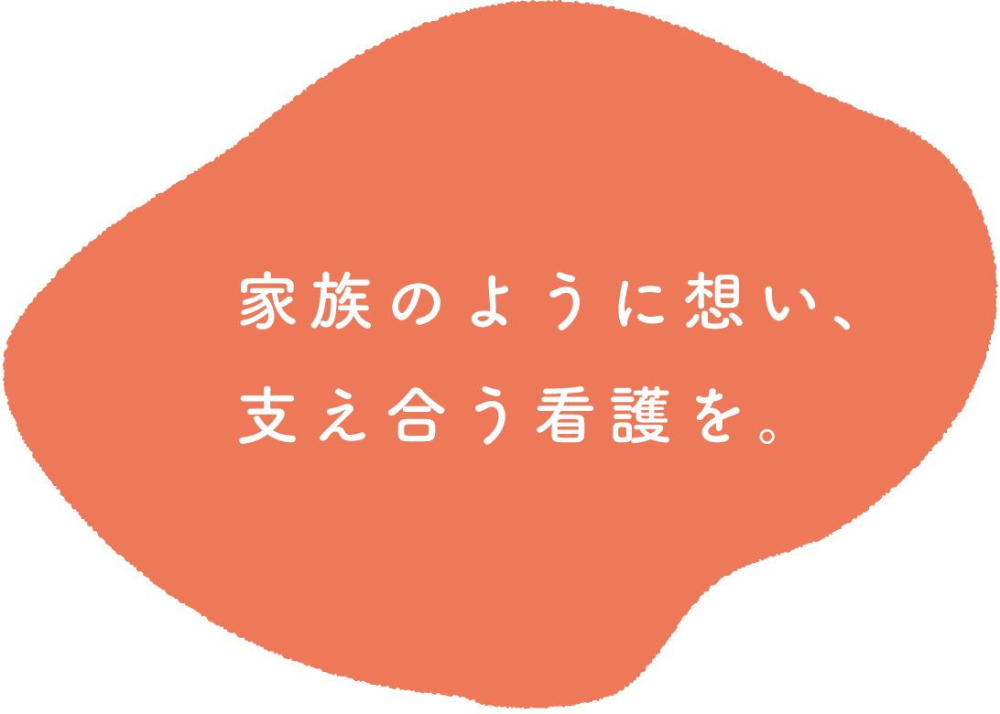
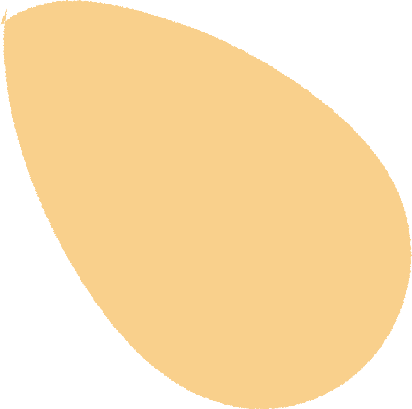
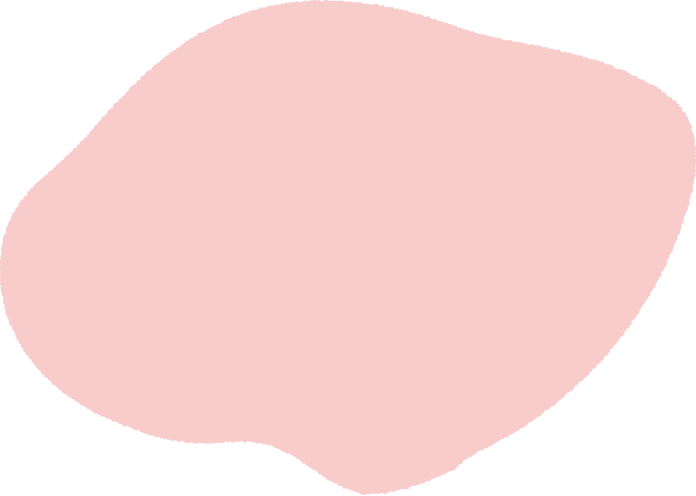
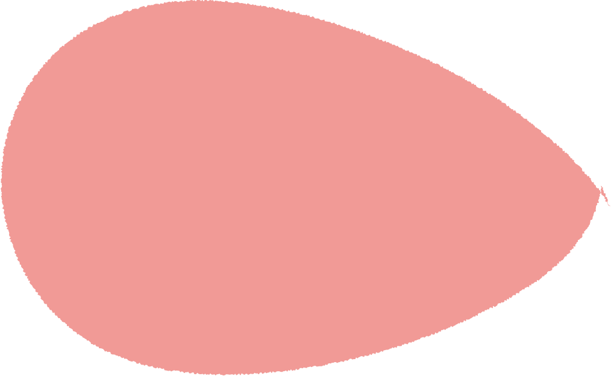
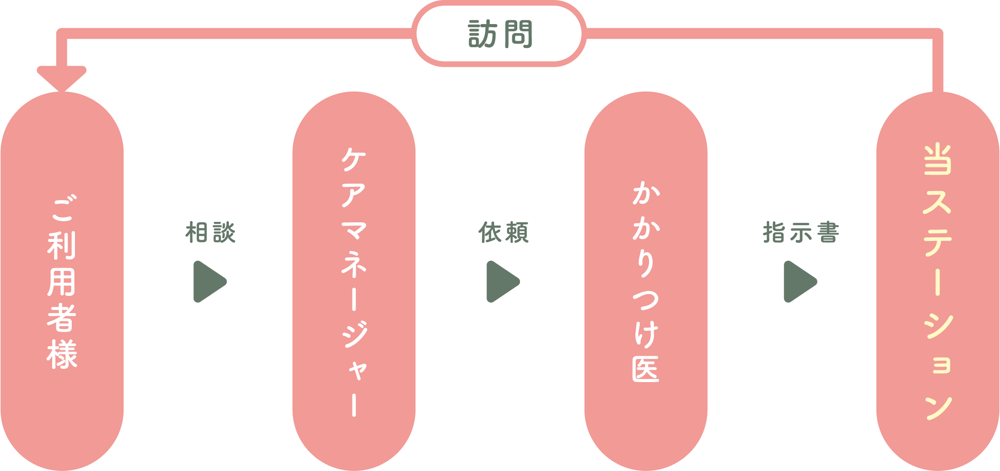
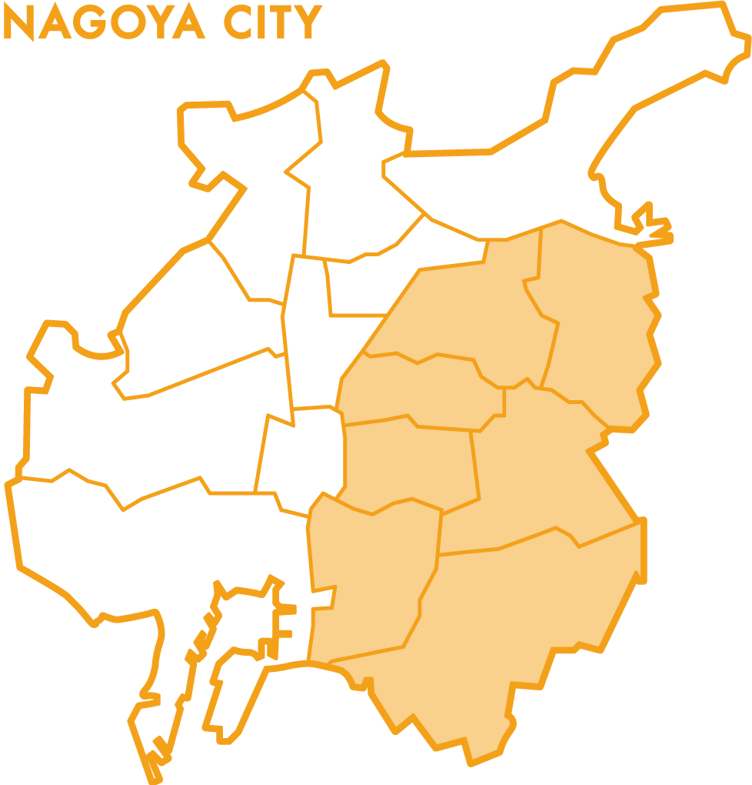
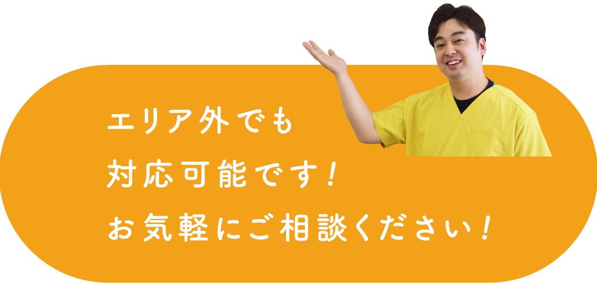
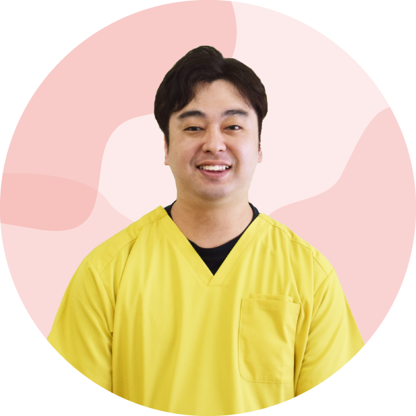

オハナの特徴
特徴O1
フットワーク軽く
迅速に対応します！
スタッフは30代が中心です。フットワーク軽く迅速に対応することを心がけています。
特徴O2
ST(言語聴覚士)による
嚥下評価ができます
ST(言語聴覚士)が在籍。嚥下機能評価、リハビリテーションを行うことができます。
特徴O3
本人のご希望を
尊重します！
ご本人やご家族の思いを丁寧に伺いながら、その方らしい生活を支えられるよう努めています。
ご利用の流れ

対象エリア

- ●天白区
- ●名東区
- ●千種区
- ●昭和区
- ●瑞穂区
- ●緑区
- ●南区

スタッフ紹介
近藤 裕也
看護師歴13年
保健師 / 医療経営士 / 在宅看護指導士
[ 整形外科 / 循環器内科 / 心臓血管外科 / 消化器内科勤務 ]
中尾 司
看護師歴9年
[ 循環器内科 / 心臓血管外科勤務・訪問看護管理者 ]

纐纈 安純
看護師歴13年
保健師 / 養護教諭 / 食生活アドバイザー
[ 集中治療 / 透析 / 外来(耳鼻科・小児科)勤務 ]
まずはお気軽に
お問い合わせ・ご相談ください！
よくある質問
主治医の指示に基づき、看護師がご自宅へ訪問し、療養生活をサポートいたします。
健康状態の観察、服薬管理、点滴や創処置などの医療的ケアに加え、清潔ケアや日常生活の支援、ご家族への介護相談などを行います。
ご利用者様お一人おひとりの状態やご希望に合わせて、安心してご自宅で過ごせるよう支援いたします。
訪問看護は、医療保険または介護保険が適用されます。
自己負担は原則1〜3割となり、保険の種類や負担割合、訪問回数・内容によって異なります。
また、一定の条件により公費負担制度が適用される場合もございます。
詳しい費用については個別にご案内いたしますので、お気軽にお問い合わせください。
料金表はこちら（PDF）
年齢に関わらずご利用いただけます。
医療保険の場合は小児から高齢者まで、主治医の指示があればご利用可能です。
介護保険の場合は原則65歳以上（または特定疾病のある40歳以上）の方が対象となります。
詳しくはご状況に応じてご案内いたしますので、お気軽にご相談ください。
訪問時間はご利用者様の状態やサービス内容に応じて異なりますが、一般的には1回あたり30分〜90分程度となります。
主治医の指示やケアプランに基づき、適切な訪問時間を設定いたします。
詳しい訪問時間についてはご相談のうえ決定いたします。
必要に応じて1日に複数回訪問することも可能です。
ただし、訪問回数は主治医の指示やケアプラン、保険制度に基づいて決定されます。
医療的な必要性が高い場合には、複数回訪問や緊急時の対応も行っております。
ご利用者様の状態に合わせて柔軟に対応いたします。